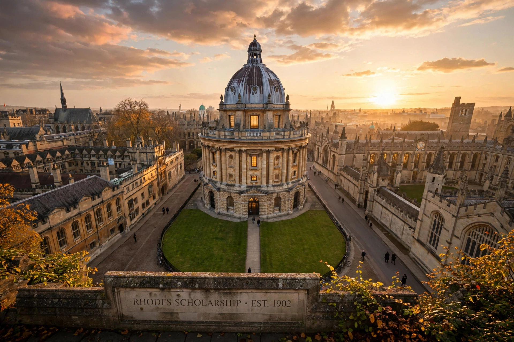

The Rhodes Scholarship is an international postgraduate award for students to study at the University of Oxford in the United Kingdom. Established by the will of Cecil Rhodes in 1902, it is widely considered among the world's most prestigious scholarships.

Rhodes, a British mining magnate and prime minister of the Cape Colony, left much of his fortune to fund scholarships for students from territories then under British rule, the United States, and Germany, intending to promote unity and leadership among English-speaking peoples. The first scholars arrived in Oxford in 1903. Women became eligible in 1977 following the Sex Discrimination Act 1975.
Rhodes's will specified criteria including academic achievement, energy to use one's talents fully, integrity and sympathy for others, and leadership potential — paraphrased today as academic excellence, energy, truth and courage, and devotion to duty. Selection committees in constituencies around the world interview finalists, and roughly 100 scholars are now selected annually from an expanded set of global constituencies administered by the Rhodes Trust.
Alumni include former US president Bill Clinton, Australian prime ministers Bob Hawke, Tony Abbott and Malcolm Turnbull, former Canadian prime minister John Turner, astronomer Edwin Hubble, and writer Naomi Wolf.
The scholarship has been debated in light of Rhodes's colonial legacy, including campaigns such as Rhodes Must Fall, which began in South Africa in 2015.